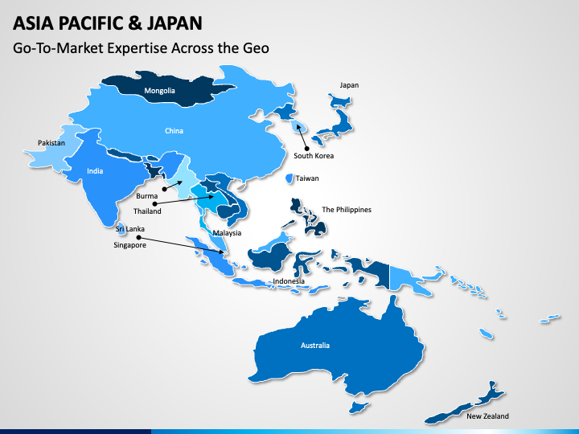

Welcome!
Thanks for visiting - I'm Adam Wright, a GTM leader specialising in the APJ & EMEA regions. With a strong background in building & growing business units from scratch, I am currently focused on building an AI early stage start-up. My passion lies in developing & executing strategic market entry & growth plans, building & motivating teams, working directly with clients to validate measurable value (in their language) but also fostering strong partnerships for scaling at pace.
What I do:
- I'm a strategic GTM & pursuit leader, positioning the value of disruptive & emerging innovation into the largest & most complex organisations
- I have taken business units from $0 to over $100M in under 18 months with a team of less than 25
- Experienced at mobilising direct, indirect & matrix 'tiger' teams across diverse regions returning 7 & 8 figure lands that often turn into revenue streams for all regions across the globe
- As a certified 'Cloud Economist' I can robustly coach, challenge & validate 'value propositions' until they genuinely demonstrate measurable business gains - in the client's langauge & can stand up to CFO analyis
- With the last 14 years focused on APJ & EMEA, I've gained intimate knowledge of efficient routes-to-markets across all sub-regions
- I build productive relationships with prioritised stakeholders including investors, boards members, regional leaders, functional leaders, channels, direct & indirect sellers
- I have developed a strong network of clients, investors, partners (including hyperscalers, consulting firms, GSI's) & regulators. Many are now good friends
- Mentoring: Designed & launched skill & career development programs used to enable & grow all strategic sellers
- I articulate the investments required to the deliver desired results with robust analysis & accuracy
APJ GTM - Target Addressable Market (TAM) & Segmentation:
I regularly re-validate TAM & market segmentation analysis. This gives us continuous qualification of where the largest opportunities are evolving by both sub-region & vertical sectors. Here is a breakdown of where my main focus areas have been up to Q3 2024:
- Autos
- 'Mega Banks'
- Industrial Conglomerates
- Chaebols (Samsung, LG & Hyundai)
- Global Miners
- Financial Services
- Logistics
- Telcos
- Banking/Finance/Crypto/Insurance
- Sovereign Wealth Funds
- Retail/e-Commerce
- Manufacturing
- Pharmaceuticals
- Life Sciences
- Financial Services
- China Global Accounts
- Macau Casinos
- Taiwan Semiconductors
- Manufacturing
- eCommerce/Internet
- Industrials
- Financial Services
- Global Systems Integrators
- Inbound Global Accounts
Japan:
Korea:
A-NZ:
ASEAN:
Greater China (China, HK & Taiwan):
India:
GTM - Scaling-At-Pace with strategic partnerships:
In order to scale faster at both an APJ regional level & a local level, I have fostered close relationships with carefully selected ecosystem partners. Perhaps more than any other region, APJ has localised business & cultural nuances which are important to understand in order to accelerate growth & ensure the local & often personalised relationships on the ground are mapped out, tapped into & optimised. But apart from the obvious business benefits of these partnerships, they also give us a more authentic connection with clients at a local level - not just at a corporate/regional HQ level.
Hyperscalers (across all regions & vertical markets):
- Microsoft
- AWS
- GCP (Workspace)
India GSI's (across APJ):
- Infosys
- WIPRO
- TCS
- HCL
- Tech M (Telco)
- Cognizant (FSI)
- LTI (Manufacturing)
Japan GSI (mostly for Japan MNCs including 'Mega Banks', autos & manufacturing sectors):
- NTT
- CTC Itochu
- Fujitsu & Hitachi
- Nomura Research Institute (FSI)
US/Europe GSI's (across APJ):
- Accenture (FSI & e-Commerce)
- ATOS (FSI & Manufacturing)
- DXC (FSI)
- CapGemini (FSI)
- Deloitte (FSI)
Value-Based Approach:
Everything I do & coach, must deliver measurable value - for my own validation. There have been many valuable sources of knowledge/influence on how I have developed this obsession with measurable value. These include great leaders/mentors, teams around me (both direct & indirect) plus matrix/virtual & partner teams. Listening to & working with clients at all levels. Winning & losing deals. Learning from competition. Lessons from delivery & measuring results. Also, the more formal programs such as structured training & coaching. These include:
- Tuck School of Business
- IBM Consulting Academy
- AWS Cloud Economics
- Microsoft Learn: Azure Cloud Consulting
- Blockchain Council
- MEDDPICC Sales Leadership/Practitioner
- Challenger Sales Practitioner
- London Management Consultants: JAWS
- Miller Heiman
- I2R (Incubation-to-Reference): Navigating Complex Campaigns
All of the above have been highly valuable & have shaped my career & coaching approach. I leverage these at different times & depending on the situation. Whilst being adaptable & agile to dynamic campaigns, it also helps to have a structured approach that focuses us on accelerating the speed-to-value for all parties. As a guide, I use & coach the following value-framework after the incubation/qualification phase:
- Understanding how to identify pain (or opportunity) within the current state
- Quantifying the impact of this pain (or opportunity) in financial terms
- Collaborating to define what the desired state (target state) looks like
- Collaborating to design what is required to achieve the transformation from current to target
- Articulating the 'Measurable Gains' achievable from getting to target state, shaped for various audiences including client, executive, internal, partners, legal, finance, technical
- Building trust & relationships continuously throughout this process across all stakeholders
- Maintaining an urgency through each step towards the target state as efficiently as possible
- Understanding personas, influencers, points of power, barriers, financial optics, risks
- Negotiating for win-win
- Motivating the right resources internally
- Efficicient but thorough, regular internal communication across all levels
- Continuation of relationships & reference-ability
And the obligatory photos to prove I am a human...?!

Casual day at work
Less casual day at work (but not much!)